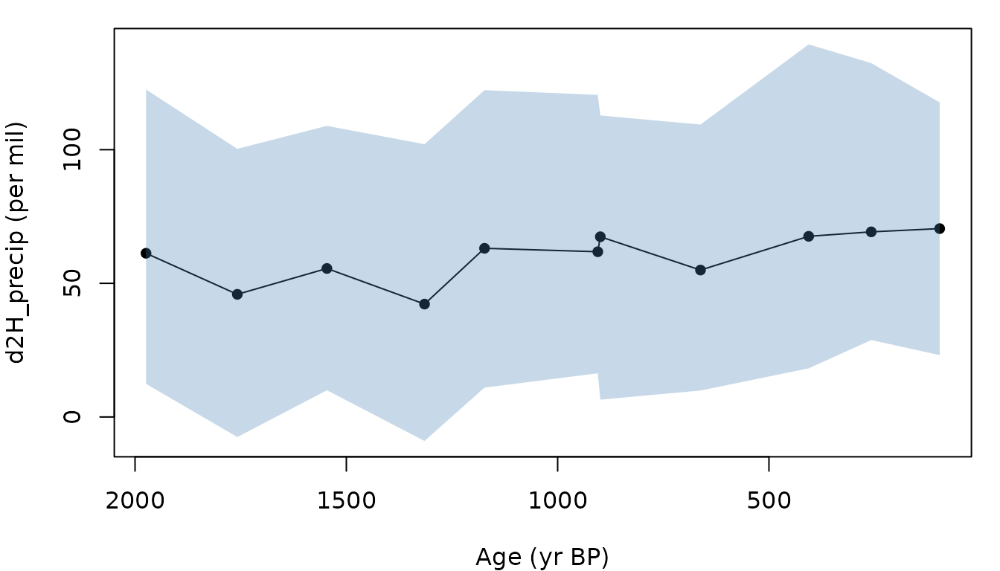

Paleo-record workflow: from a downcore series to a defensible claim
Source:vignettes/paleo-record-workflow.Rmd
paleo-record-workflow.RmdThis vignette walks the paleo-record workflow on a real Iso2k record, Lake Malawi (LS11KOMA, Konecky et al.). The chain is:
- Load the downcore series.
- Extract or override the local effective slope.
- Run the inversion with
record_idandslope. - Compute a within-record detection threshold and the posterior probability of a hypothesised change.
- Assess a published claim against the four-level taxonomy from manuscript Section 4.5.6.
- Plot the reconstructed
d2H_precipseries.
The detection threshold comes from the calibration’s posterior
residual SD (sigma_residual, approximately 16 per mil for
the spatial models), combined with analytical uncertainty and the local
effective slope (manuscript Section 4.5.3). The spatial GP intercept’s
contribution cancels in any contrast between intervals of the same
record.
1. Load the downcore series
library(leafwax)
malawi_path <- system.file(
"extdata", "example_records", "LS11KOMA_d2H.csv",
package = "leafwax"
)
malawi <- read.csv(malawi_path)
malawi$d2h_wax <- malawi$d2H_wax
malawi$age <- malawi$age_yrBP
malawi
#> age_yrBP d2H_wax d2h_wax age
#> 1 96 -102.962 -102.962 96
#> 2 258 -101.987 -101.987 258
#> 3 406 -105.778 -105.778 406
#> 4 662 -107.577 -107.577 662
#> 5 899 -104.848 -104.848 899
#> 6 905 -106.813 -106.813 905
#> 7 1173 -107.227 -107.227 1173
#> 8 1315 -112.561 -112.561 1315
#> 9 1546 -109.132 -109.132 1546
#> 10 1758 -112.071 -112.071 1758
#> 11 1974 -105.353 -105.353 1974The record has 11 samples spanning the Common Era (~100–2000 yrBP) at Lake Malawi (10.02 deg S, 34.19 deg E).
2. Local effective slope
local_effective_slope() returns a per-draw vector of the
d2H_wax-d2H_precip slope at the site, combining the global posterior
beta_oipc with the spatial slope GP. The default ceiling is 0.88, the
simple-model upper bound from manuscript Section 4.5.5.
malawi_lon <- 34.1878
malawi_lat <- -10.0183
slope_post <- suppressWarnings(local_effective_slope(
longitude = malawi_lon,
latitude = malawi_lat,
model_name = "baseline_sp",
n_draws = 100,
ceiling = 0.88,
verbose = FALSE
))
quantile(slope_post, c(0.025, 0.5, 0.975))
#> 2.5% 50% 97.5%
#> 0.4216630 0.5785350 0.6923703A defended slope point estimate would typically be the posterior median; here we keep the per-draw vector so the inversion propagates slope uncertainty.
3. Bayesian inversion with the local slope
invert_d2H() accepts the slope vector built above. We
pass record_id so the function validates that all rows are
from one site, and we ask for the full posterior draws matrix so we can
hand it to detect_change(). The wax-error draw uses
analytical uncertainty plus the model’s posterior residual SD
(manuscript supplement Section S4.1, Eq. 7); the same residual applies
to within-record contrasts because the spatial GP intercept’s
contribution cancels in any difference between time intervals
(manuscript Section 4.5.3).
recon <- suppressWarnings(invert_d2H(
d2H_wax = malawi$d2h_wax,
d2H_wax_sd = rep(3, nrow(malawi)),
longitude = rep(malawi_lon, nrow(malawi)),
latitude = rep(malawi_lat, nrow(malawi)),
model_name = "baseline_sp",
n_posterior_draws = 100,
slope = slope_post,
record_id = "LS11KOMA",
return_full = TRUE,
verbose = FALSE
))
head(recon$summary[, c("d2h_wax", "d2h_precip_median",
"d2h_precip_lower", "d2h_precip_upper")])
#> d2h_wax d2h_precip_median d2h_precip_lower d2h_precip_upper
#> 1 -102.962 70.47818 23.154207 117.6848
#> 2 -101.987 69.26344 28.778822 132.4062
#> 3 -105.778 67.59871 18.199753 139.3961
#> 4 -107.577 54.97100 9.885466 109.4122
#> 5 -104.848 67.43408 6.481397 112.8013
#> 6 -106.813 61.82362 16.339715 120.5175The returned summary has one row per sample with the
posterior median and credible-interval bounds;
posterior_draws is the n_iter x n_samples matrix used
below.
4. Detection threshold and posterior probability of change
detect_change() reports the manuscript Section 4.5.3
detection threshold and the posterior probability that the difference in
mean d2H_precip between two intervals exceeds a magnitude. We split the
record at 1000 yrBP and ask whether there was a 30 per mil shift in
d2H_precip across the boundary. The threshold uses the calibration’s
posterior residual SD (sigma_residual ~16 per mil for
spatial models; pull it from model$draws$sigma in your fit,
or use the manuscript headline value).
rho_t <- estimate_temporal_autocorrelation(
malawi$d2h_wax, malawi$age, method = "ar1"
)
dc <- detect_change(
reconstruction = recon,
age = malawi$age,
baseline_interval = c(0, 1000),
test_intervals = list(post_1000 = c(1000, 2000)),
sigma_residual = 16,
sigma_analytical = 3,
rho_t = rho_t,
beta_eff = stats::median(slope_post),
confidence = 0.95,
magnitudes = c(10, 30, 50)
)
#> Warning: leafwax preview posteriors in use (detect_change): 100 draws of
#> 'baseline_sp'. Tail probabilities and 95% credible intervals are unstable at
#> this sample size; not suitable for inference. Run
#> download_model_data("baseline_sp") for the full posterior.
dc$threshold
#> [1] 60.69053
dc$intervals
#> interval n_baseline n_test delta_mean delta_median delta_lower delta_upper
#> 1 post_1000 6 5 -10.29747 -9.278969 -40.96457 17.9845
#> p_abs_delta_gt_10 p_abs_delta_gt_30 p_abs_delta_gt_50
#> 1 0.57 0.12 0.01The threshold is the smallest d2H_precip change between two independent samples at this site that can be distinguished from calibration noise at 95% confidence. The record’s actual posterior delta is typically smaller, which is the point of the example.
5. Assess a published claim
assess_claim() walks the four-level taxonomy from
manuscript Section 4.5.6. We test a hypothetical claim that this record
shows a 30 per mil drying signal across 1000 yrBP, supported by some
corroborating evidence and stationarity arguments.
malawi_record <- data.frame(
d2h_wax = malawi$d2h_wax,
age = malawi$age,
d2h_wax_err = rep(3, nrow(malawi))
)
claim <- list(
level = 4, # asserted level
interval_baseline = c(0, 1000),
interval_test = c(1000, 2000),
sigma_analytical = 3,
rho_t = rho_t,
confidence = 0.95,
beta_eff = stats::median(slope_post),
magnitude_precip = 30,
corroborating_proxies = list(
speleothem_d18O = "regional speleothems show coeval shift"
),
vegetation_stationary = list(
value = TRUE,
evidence = "n-alkane chain length distributions stable across the boundary"
),
seasonal_source_stationary = list(
value = TRUE,
evidence = "regional speleothem d18O shows no seasonality shift"
),
evapotranspirative_stationary = list(
value = TRUE,
evidence = "leaf-water proxy stable; no aridity transition"
)
)
verdict <- suppressWarnings(assess_claim(
record = malawi_record,
claim = claim,
reconstruction = recon
))
verdict$highest_level
#> [1] 0
verdict$asserted_supported
#> [1] FALSE
verdict$levels
#> level passed summary
#> 1 1 FALSE delta_wax = -4.27 permil; 95% threshold = 6.47 permil (FAIL)
#> 2 2 FALSE blocked by Level 1 failure
#> 3 3 FALSE blocked by Level 2 failure
#> 4 4 FALSE blocked by Level 3 failureThe taxonomy walks each level in turn: every level above the highest
one passed is reported with the reason it failed. Reading the
levels data frame top to bottom is the recommended way to
see what a record-claim pair supports.
6. Plot the reconstructed d2H_precip
op <- par(mar = c(4, 4, 1, 1))
ord <- order(malawi$age)
plot(
malawi$age[ord],
recon$summary$d2h_precip_median[ord],
type = "o", pch = 16, col = "black",
xlim = rev(range(malawi$age)),
ylim = range(c(recon$summary$d2h_precip_lower,
recon$summary$d2h_precip_upper)),
xlab = "Age (yr BP)",
ylab = "d2H_precip (per mil)"
)
polygon(
c(malawi$age[ord], rev(malawi$age[ord])),
c(recon$summary$d2h_precip_lower[ord],
rev(recon$summary$d2h_precip_upper[ord])),
border = NA, col = adjustcolor("steelblue", alpha.f = 0.3)
)
par(op)The shaded band is the 90% credible interval per sample, propagating analytical uncertainty, regression-parameter uncertainty, the local slope posterior, and the calibration’s posterior residual SD.
Notes
- This vignette uses 200 posterior draws for speed. Production
reconstructions should use the full posterior (omit
n_drawsandn_posterior_draws). - Re-running the workflow on a longer record (e.g., LS16THN301, an 8 kyr Holocene series with larger d2H_precip changes) reaches Level 3+ for the larger claimed shifts that record was published with. The workflow is identical; only the inputs change.